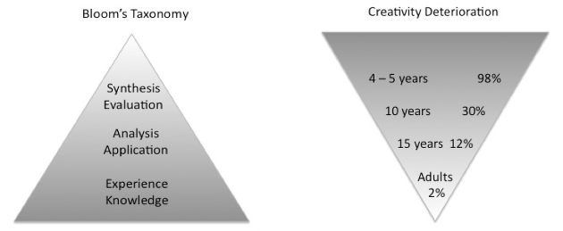
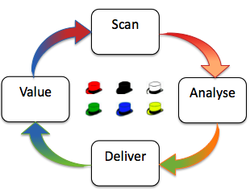
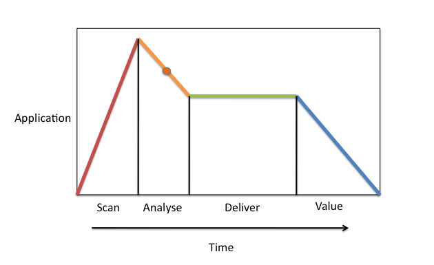
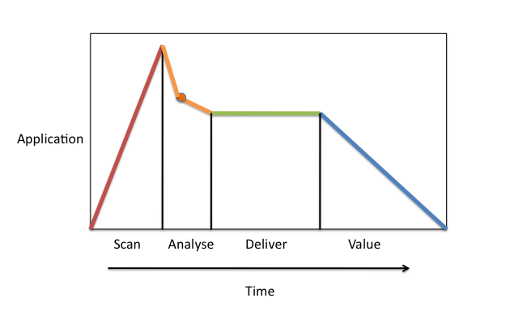
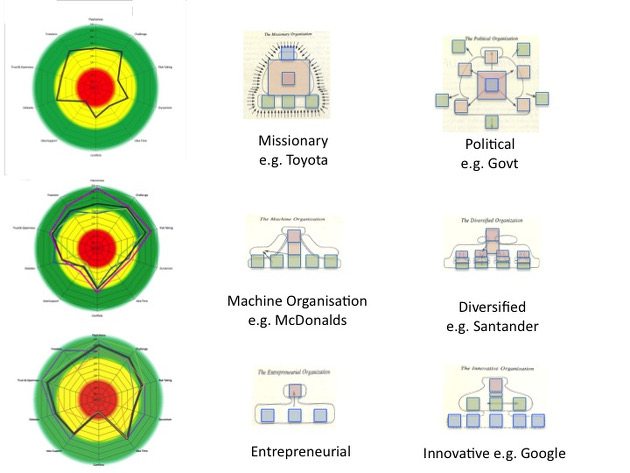

Bowie managed to change ahead of the market - usually successfully. If he missed he changed again. It is a cute trick that we can learn from.
There are four elements to the above model:
- Backgrounds - Depict continuous change. Classical, Digital and Market.
- Sense Maker Models - Collective ways of understanding the changes.
- C-Star - Personal sense-making based on experience, values and beliefs.
- Personas - How we appear to others and blend in or stand out from the backgrounds.
I conject Bowie used elements 1 and 2 to detect trends, identify threats and opportunities to develop skills to stay current.
I think he used methods similar to 3 to change ways of working, ahead of the crowd. The C-Star offers fast ways of working:
-
Firstly we can move Station to Station radially from Chaos to Certainty.
-
Secondly we can use intuition to move arterially between points on the star.
-
The third and fastest path is through the Mobius loop below the star. That, however, requires a twist and step change in personal understanding which is not alway possible because of constraints, especially if stuck in group think.
Part 4 is building personas to fit in or hide behind. We subconciously apply camouflage - all the time.
Frequent ch-ch-ch-changes of job, role and organisations ensures that reinvention is necessary to survive and succeed in the predicted future workplace - or will it be Ziggy Career Dust for you?
Let's learn from the star man and apply some of his creative techiques, without having to look like: a crazed doll, malevolent aristo or space cadet. Cool ginger is good, though.
I doubt that Bowie had a career plan with personas mapped out over time. So what can we learn that is relevant to the coming changes in our workplaces?
- Reclaim creative skills we already have.
- Understand that change is continuous - and be prepared for information era ways of work.
- Understand personas as camouflage to blend into changing environments.
- Profit from Intellectual Property.
If we consider at the main model for education curricula planning over the last 60 or so years and compare
it to the skills we need going forward in increasingly automated workplaces there is a stark difference. Do not despair.

Blooms Taxonomy vs George Land's research commissioned by NASA.
In 1968 NASA realised that they needed creative thinking crew members who would be able to survive when things went wrong in space. They comissioned Land to research the subject.
Land's findings are based on almost 50 years of research. I question if, like many old models, they are still valid. My experience suggests that creativity is a process
and can be learned.
We may not aspire to stand out from the crowd as Bowie did but we will need to differenetiate from the neuromimetic machines that are forecast to
replace many jobs. We can take the techniques that Bowie and his fine collaborators used to kick start creativity in business contexts.
Three tools for business creativity
- Bound and Relax: A technique Bowie used to evaluate and escape constraints was Dadaist "cut-up" word play.
It can be applied to business issues.
-
Creative Techniques Library: Brian Eno devised a set of oblique strategies for personal creative work.
We offer a library for business based creativity.
-
De Bono Blender: Use lateral thinking to change persona but hang on to yourself.
The De Bono Blender allows us to drag the hats that represent different thnking styles into phases of work needed in tomorrow's offices.

The Scan, Analyse, Design, Value cycle is an upgrade to the Plan, Do, Check, Act cycle. It is a reflection of the change from
manufacturing to knowledge work.
Moving from the top level of the top of Bloom's taxonomy - synthesis - to augment rational analysis with creative thinking
we can use a library technique:
sleight of mouth and build a process based on an ADSR music synthesis envelope to show how knowledge work can be designed.
Cognitive lead time will be important in lean working.

The Analyse phase of the above workflow process has creative and rational thinking elements.
The Techniques Library has helpful ways to speed up creative analysis resulting in faster delivery of value, if the climate supports.

It is easier to be creative in some corporate cultures than others. The following examples show climate (team level culture) measurements in different types of organisation.
The climate dimensions measured are: Playfulness, Challenge, Risk Taking, Dynamism, Idea Time, Conflicts, Idea Support,
Debates, Trust and Openness and Freedom.

As we move into the knowledge-based economy strategic value is changing.
| Manufacturing Age |
Information Era |
| Rarity |
Efficiency |
| Inimitability |
Risk Reduction |
| Non-transferability |
Applied Learning |
Bowie was smart. He sold his back catalog as Bowie Bonds: always a step ahead of the market.
Licensing of Intellectual Property [IP] will increase once intellectual capital audits are appreciated and in place.
What IP do you have?
Can you: create, measure, protect and monetise it?
In summary we can see
- There are creative techniques we can use that are:
- Fast
- Easy to learn
- Non-disruptive
- Augment rational analysis.
- Creative thinking differentiates humans from neuromimetic machines.
- De Bono's lateral thinking allows us to temporarily adopt different personas.
- Strategic value will drive changes as we move into the information economy.
If you would like more details about these and other smart-creative techniques get in touch at
Stuck Figures